上市公司招聘大数据：人才需求多维画像与就业趋势分析
01 研究背景与目标
招聘数据是劳动力市场最敏感的"先行指标"。上市公司的岗位发布不仅反映企业自身的扩张节奏，更折射出行业景气度、区域产业结构与人才需求结构的系统性变迁。本项目以 2014—2026 年上市公司招聘大数据为底本，围绕"行业—城市—学历—岗位—薪资"五个维度，构建一套可复现、可交互的就业趋势分析框架。
在高校扩招、产业升级与就业压力并存的背景下，这份数据资产具备三重价值：其一，对高校，可作为专业设置、培养方案与就业指导的客观参照；其二，对学生，可量化不同行业、城市、学历门槛的回报差异，辅助职业选择；其三，对企业与政府，可识别区域人才虹吸与产业集聚方向，为校招策略与人才政策提供数据支撑。
项目目标是交付一条完整的数据工程链路：分块读取大表 → 字段标准化与薪资口径统一 → 异常值剔除与学历归并 → 多维统计与可视化 → Streamlit 交互看板，最终沉淀为可直接复现的 323,818 条干净招聘记录与 6 张核心分析图。
02 数据来源与治理
原始数据为 2014—2026 年上市公司招聘明细 CSV，单表体量超百万行。为在普通内存环境下完成可复现分析，采用"分块读取 + 5% 等比例随机抽样"策略，再通过薪资口径转换、IQR 异常值剔除、学历五级归并等步骤完成清洗。
（1）分块读取与 5% 抽样：以 10 万行一块读入，每块内固定随机种子 42 抽取 5%，保证样本可复现、不依赖全量原始数据。
chunk_size = 100000
sample_frac = 0.05 # 5% 等比例抽样，random_state=42 保证可复现
chunks, total_rows = [], 0
for chunk in pd.read_csv('上市公司招聘大数据2014-2026.3.csv',
encoding='utf-8', low_memory=False,
chunksize=chunk_size):
sampled = chunk.sample(frac=sample_frac, random_state=42) # 每块独立抽样
chunks.append(sampled)
total_rows += len(chunk)
df = pd.concat(chunks, ignore_index=True)（2）薪资口径转换与 IQR 异常值剔除：将"最低月薪/最高月薪"两列统一为数值（去除千分位逗号、"k" 缩写、"元"字），并以最高月薪为对象做 IQR fences 剔除录入异常，最终以 (最低+最高)/2 作为每条岗位的平均月薪。
# 区间薪资取中点作为该岗位代表月薪
df_clean['平均月薪'] = (df_clean['最低月薪_数值'] + df_clean['最高月薪_数值']) / 2
# 以最高月薪为基准，用 IQR fences 剔除异常录入
Q1 = df_clean['最高月薪_数值'].quantile(0.25)
Q3 = df_clean['最高月薪_数值'].quantile(0.75)
IQR = Q3 - Q1
lower_bound = Q1 - 1.5 * IQR
upper_bound = Q3 + 1.5 * IQR
df_clean = df_clean[(df_clean['最高月薪_数值'] >= lower_bound) &
(df_clean['最高月薪_数值'] <= upper_bound)]（3）学历五级归并：原始学历字段写法松散（"本科及以上""大专学历""不限"等），统一映射为博士、硕士、本科、大专、不限五类，便于横向统计。
def simplify_edu(edu):
if pd.isna(edu):
return 'Unknown'
s = str(edu)
if '博士' in s: return '博士'
if '硕士' in s: return '硕士'
if '本科' in s: return '本科'
if '大专' in s: return '大专'
if '不限' in s or '无' in s: return '不限'
return '其他'
df_clean['学历_简化'] = df_clean['学历要求'].apply(simplify_edu)清洗后保留 323,818 条有效记录，覆盖 85 个行业、884 个城市，平均月薪 9,104 元，中位数 8,000 元；本科与大专合计占比 77.3%（本科 44.9%、大专 32.4%），硕士及以上合计仅 2.3%。
03 多维画像：六张图看清就业大盘
从行业、城市、学历、岗位、薪资五个维度切入，回答三个问题：岗位在哪些地方被创造出来？什么样的人被需要？钱在哪里？
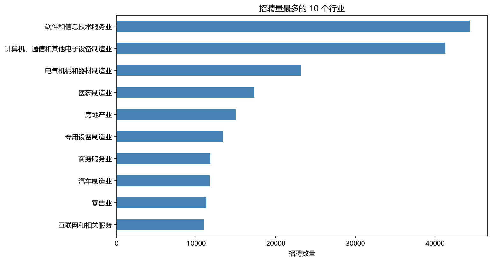
行业侧揭示了"硬科技 + 制造升级"的双轮驱动格局：软件与电子信息两类数字经济行业合计贡献约 85,683 个岗位，是第二名医药制造业（17,325 条）的近 5 倍；传统地产、零售虽仍在 Top10，但已明显退居第二梯队。这意味着上市公司校招的增量基本盘已经从"地产+金融"切换到"IT+先进制造"。
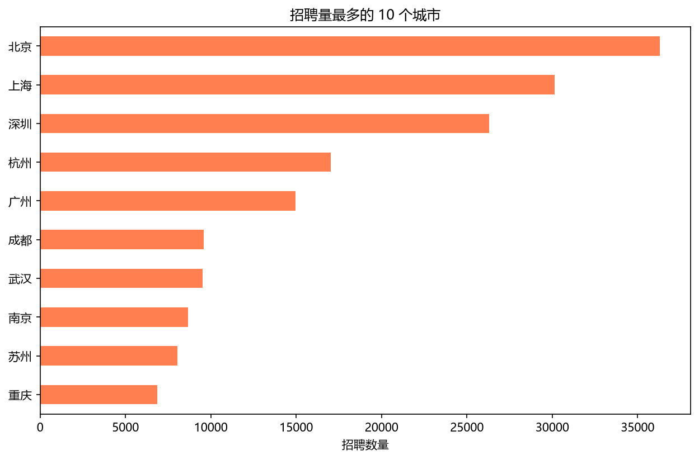
城市侧呈现极强的头部集聚效应：Top10 城市合计吸纳 167,369 条岗位，占总样本的 51.7%，其中仅北京一城就占 11.2%。北上深杭构成"第一梯队"，广州虽位列第五但与杭州差距明显；成都、武汉、南京、苏州构成新一线"第二梯队"，是上市公司跨区域布局的主要落点。对求职者而言，逃离北上广并不等于逃离头部岗位集群。
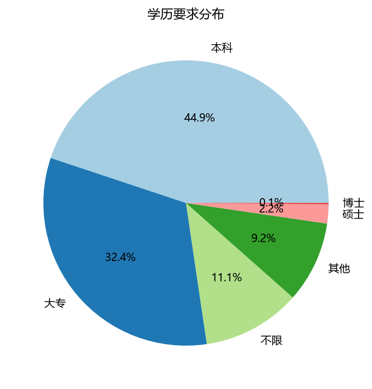
学历侧给出了一个反直觉的信号：上市公司招聘并不"唯学历"。本科 + 大专合计 77.3%，是绝对主力；硕士及以上仅 2.3%，说明大量技术、销售、运营、职能岗位在本科层面即可获得入场券，博士岗位则高度集中于医药、新材料等研发密集型行业。对本科生而言，"学历内卷"在岗位入口层面并不成立，真正的分层发生在岗位类型与城市选择上。
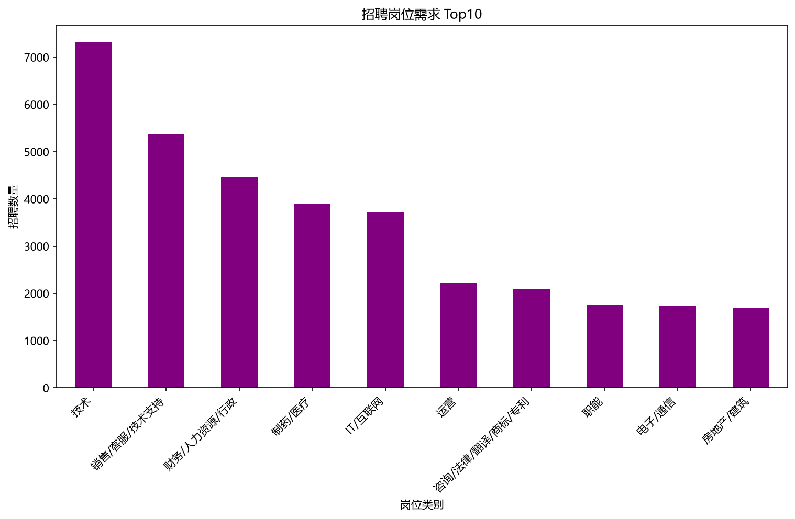
岗位侧呈现"技术 + 通用职能 + 行业专家"的三层结构：技术类岗位是第一大入口，销售与职能岗构成第二大基本盘，制药/医疗、电子通信、房地产/建筑则是行业纵深型岗位。值得注意的是，"技术"与"IT/互联网"被拆分为两类，前者偏硬件/工程实现，后者偏软件/互联网产品，二者合计已超过 11,000 条，是应届生最大的单一就业方向。
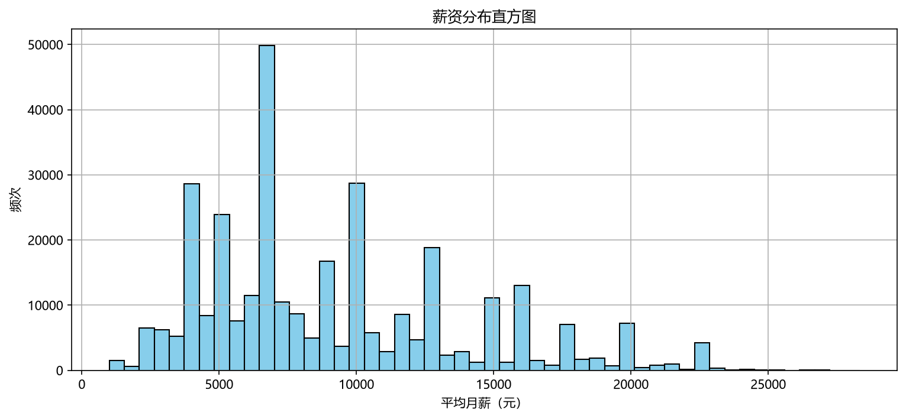
薪资侧揭示了典型的右偏分布：均值 9,104 元高于中位数 8,000 元，被少数高薪岗位拉高；近 4/5 的岗位月薪落在 5,000—20,000 元区间，月薪过 2 万属于少数派。这意味着对大多数应届毕业生而言，"第一份工作月薪过万"是有数据支撑的合理预期，但不应以此作为求职基准线——分布的主体才是真实市场。
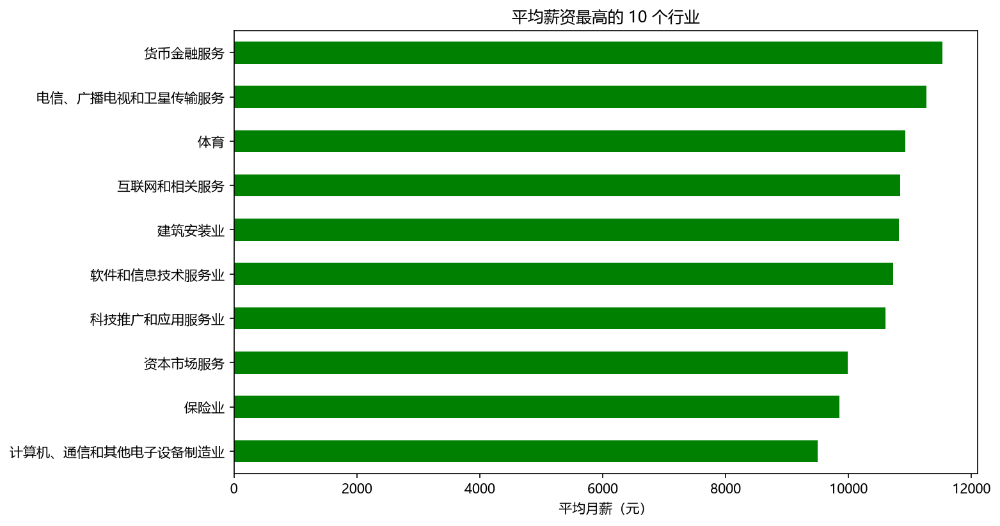
高薪侧与招聘量侧形成有趣对照：招聘量最大的软件行业（44,352 条）平均月薪 10,722 元，并未进入 Top3；而货币金融、电信、体育这些招聘量并不靠前的行业，平均月薪反而最高。这说明"岗位多"与"薪资高"并非线性关系——金融、电信、体育是典型的"小而美"行业，而软件是"大而全"的行业，二者对应不同的职业路径选择。
04 交互式可视化看板
静态图只能讲述一个故事，交互看板才能让读者自己提问。基于 Streamlit 构建单页应用，支持按行业、城市动态筛选，KPI 与六张图实时联动。
看板以 st.cache_data 缓存清洗后 CSV，首次加载约 323,818 条记录；侧边栏提供行业与城市两个下拉筛选器，主区上方是 4 张 KPI 卡片（总岗位数、平均月薪、行业数、城市数），下方依次排列行业 Top10、城市 Top10、学历饼图、高薪行业 Top10、岗位 Top10、薪资直方图，并附 100 行数据预览。
@st.cache_data
def load_data():
# 读取清洗后的数据，避免每次筛选都重读 CSV
return pd.read_csv('data/recruitment_data_cleaned.csv', encoding='utf-8')
df = load_data()
# 侧边栏：行业 + 城市双维度筛选
industries = ['All'] + sorted(df['上市公司行业'].dropna().unique().tolist())
selected_industry = st.sidebar.selectbox("Select industry", industries)
cities = ['All'] + sorted(df['工作城市'].dropna().unique().tolist()[:20])
selected_city = st.sidebar.selectbox("Select city", cities)
filtered = df.copy()
if selected_industry != 'All':
filtered = filtered[filtered['上市公司行业'] == selected_industry]
if selected_city != 'All':
filtered = filtered[filtered['工作城市'] == selected_city]
# KPI 卡片：总岗位数 / 平均月薪 / 行业数 / 城市数
c1, c2, c3, c4 = st.columns(4)
c1.metric("Total Job Posts", f"{len(filtered):,}")
c2.metric("Avg. Monthly Salary", f"{filtered['平均月薪'].mean():.0f} CNY")
c3.metric("Industries", f"{filtered['上市公司行业'].nunique()}")
c4.metric("Cities", f"{filtered['工作城市'].nunique()}")运行方式：在项目根目录执行 streamlit run code/dashboard.py，浏览器自动打开本地端口即可交互。技术栈仅依赖 pandas + matplotlib + streamlit，无需额外数据库或前端工程，便于在面试现场快速演示。
↓ 在线预览（基于 323,818 条样本聚合的 ECharts 可交互看板）
05 结论与建议
基于 323,818 条样本的实证结果，分别面向高校、学生、企业、政府四类主体给出可落地建议。
面向高校（专业建设与就业指导）
- 软件与电子信息类岗位合计 8.5 万条，是招聘量的绝对主入口，建议计算机、软件工程、电子信息类专业持续扩招并强化工程实训；
- 医药制造、专用设备、汽车制造等先进制造业岗位需求稳居 Top10，应推动"传统工科 + 数字化"复合型课程改造，避免专业设置与产业脱节；
- 本科 + 大专合计占比 77.3%，硕士及以上仅 2.3%，说明本科教育仍是就业主力，应把就业指导重心放在本科大三、大四的岗位匹配与实习对接上，而非盲目推考研。
面向学生（技能布局与职业选择）
- 地域选择上，Top10 城市吸纳了 51.7% 的岗位，北上深杭是确定性最高的就业市场；若不愿挤北上广，成都、武汉、南京、苏州是性价比更高的新一线落点；
- 技能布局上，技术类岗位是第一大入口，建议在校期间至少掌握一门主语言（Python/Java）+ 一项工程能力（数据处理、前端或嵌入式），同时补通用职能（Excel、SQL、PPT）；
- 薪资预期上，5,000—10,000 元区间占 42.3%、10,000—20,000 元占 35.4%，第一份工作月薪过万是合理预期但不应作为硬底线；追求高薪应聚焦货币金融、电信、互联网、软件等平均月薪过万的行业。
面向企业（校招与岗位策略）
- 校招资源应向头部城市集中：北京、上海、深圳三城合计贡献 32% 的岗位，可作为校招宣讲与offer发放的主战场；
- 岗位画像上，技术类与销售/客服/技术支持两类岗位合计占比最高，建议在 JD 中明确本科门槛即可，不必盲目抬高到硕士；
- 薪资对标上，若处于软件、互联网、金融等高薪行业，平均月薪基准线应在 10,000 元以上才有竞争力；传统制造行业可参考 8,000 元中位数。
面向政府与园区（人才政策制定）
- 884 个城市中仅 Top10 吸纳过半岗位，说明人才虹吸效应显著，非头部城市需结合本地产业禀赋（如苏州—电子、武汉—光电、成都—软件）打造差异化人才政策，避免与北上深正面争夺；
- 软件与电子信息类岗位占比近 1/4，建议产业园区优先引入数字经济与先进制造配套企业，形成"产业—岗位—人才"闭环；
- 本科 + 大专合计 77.3% 的学历结构提示，高职与应用型本科人才同样是上市公司用人主力，人才政策应覆盖大专层次，避免补贴只向硕士博士倾斜。
广东省轻食市场消费者调查与分群研究
一、研究背景与分析框架
本研究回答的核心业务问题是：在广东省轻食市场中，究竟是谁在买、为什么买、卡在哪里、又该如何运营。 为避免"凭感觉下结论"，问卷以 SOR 理论为骨架——外部刺激（产品、价格、渠道、社媒）并不直接决定购买， 而是先改变消费者的内部心理（价值认同、情感态度），再转化为行为反应（频次、溢价、推荐、复购）。 量表共 24 题（李克特 5 级）：S 题组 Q11–Q20、O 题组 Q21–Q28、R 题组 Q29–Q34。 业务意义在于：把"营销该打哪里"从口号变成可被数据检验的传导链条。
下面所有定量分析均按"先证明测量工具可靠（信效度）→ 再描述人群是谁 → 再找差异与分群 → 最后定位影响因素与机理"的顺序展开。 本仓库中 Python 代码以 117 份预调研问卷完整跑通全流程，其信效度、因子结构、三类客群结论与 587 份正式 SPSS 结果高度一致， 用以验证方法的可复现性与稳健性；正式结论以 587 份 SPSS 结果为准。
二、问卷信度与效度检验
问卷是"测量工具"，分析前必须先证明它靠得住、测得准。 信度用 Cronbach's α 衡量 24 道题的内部一致性（α≥0.7 可信、≥0.9 优秀）； 效度用 KMO 与 Bartlett 球形检验判断是否适合做因子分析（KMO≥0.7、Bartlett p<0.05）。 这一步的业务意义是：后续所有差异、分群、回归结论，都建立在"数据本身没噪音"的前提上。
# 来源：src/01_信度效度检验.py（Cronbach's α 与 KMO/Bartlett 手动实现） from config import * # 载入路径、配色、load_clean() from scipy import stats _, score = load_clean() # score 为 117 行 × 24 列的量表得分 X = score.values # 转 numpy 矩阵 k = X.shape[1] # 题目数 = 24 # ① Cronbach's α：α = k/(k-1) * (1 - 各题方差之和 / 总分方差) item_var = X.var(axis=0, ddof=1) # 每一道题的方差 total_var = X.sum(axis=1).var(ddof=1) # 每人总分的方差 alpha = k / (k - 1) * (1 - item_var.sum() / total_var) # ② KMO：相关系数平方和 / (相关平方和 + 偏相关平方和) corr = np.corrcoef(X, rowvar=False) inv_corr = np.linalg.pinv(corr) # 相关矩阵求逆 d = np.sqrt(np.diag(inv_corr)) partial = -inv_corr / np.outer(d, d) # 偏相关系数矩阵 np.fill_diagonal(partial, 1) corr_sq = corr ** 2; partial_sq = partial ** 2 np.fill_diagonal(corr_sq, 0); np.fill_diagonal(partial_sq, 0) kmo = corr_sq.sum() / (corr_sq.sum() + partial_sq.sum()) # ③ Bartlett 球形检验：原假设"相关矩阵是单位阵" n = X.shape[0] det = max(np.linalg.det(corr), 1e-12) chi2 = -((n - 1) - (2 * k + 5) / 6) * np.log(det) df = k * (k - 1) / 2 p_chi2 = 1 - stats.chi2.cdf(chi2, df)
| 检验项目 | Python 117 份复现值 | SPSS 正式 587 份 | 判定 |
|---|---|---|---|
| Cronbach's α（整体信度） | 0.9665 | 0.930 | ≥0.9，内部一致性很优秀 |
| KMO 取样适切性 | 0.9265 | 0.955 | ≥0.7，适合因子分析 |
| Bartlett χ² | 2376.11 | — | 显著 |
| Bartlett df | 276 | — | — |
| Bartlett p 值 | <0.001 | <0.001 | 拒绝单位阵假设，题项间存在真实相关 |
结果解读：两套数据、两种工具（Python 与 SPSS）独立得到 α 均在 0.93 以上、KMO 均在 0.92 以上、Bartlett 均极显著。 这意味着 24 道量表题高度同向、且题项间存在有意义的相关结构——问卷不是"散点式提问"，而是在稳定测量同一个轻食消费态度构念， 后续因子分析与结构方程模型在方法论上是站得住的。
三、消费者画像与描述性统计
这一步回答"买轻食的到底是哪类人"。对性别、城市层级、收入、职业、价格接受区间、每周食用频率做频数与占比统计。 业务意义是：先锁定目标人群的人口学轮廓，为后续分群与定价提供基准。 下列图表为 Python 基于 117 份预调研问卷的复现结果；正式 587 份样本结构更均衡（女约 60%、学生 31.9%、企业职员 31.3%）， 二者共同指向"年轻、价格敏感、追求性价比"的核心人群。
# 来源：src/02_描述统计与画像.py（基础特征频数 + 6 张统计图）
raw, score = load_clean()
def col(n): # 按题号匹配真实列名，如 col(1)->性别
for c in raw.columns:
if c.split("、")[0].isdigit() and int(c.split("、")[0]) == n:
return c
# 对 6 个人口特征分别算频数与占比
for n, label in {1:"性别",3:"城市层级",4:"月收入",5:"职业",
6:"单次价格区间",7:"每周食用频率"}.items():
vc = raw[col(n)].value_counts()
pct = (vc / vc.sum() * 100).round(1) # 占比%
t = pd.DataFrame({"人数": vc, "占比%": pct})
print(t)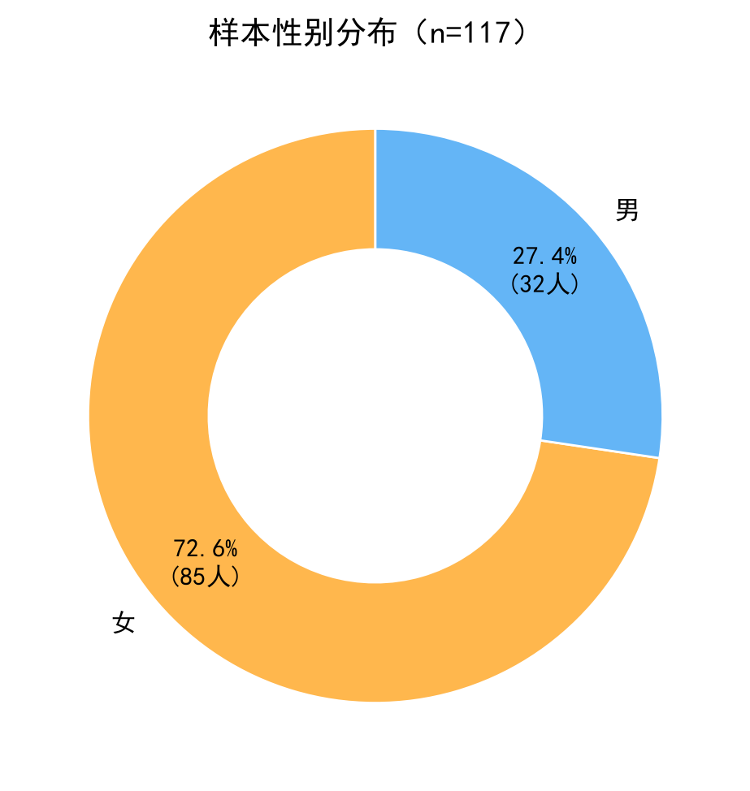
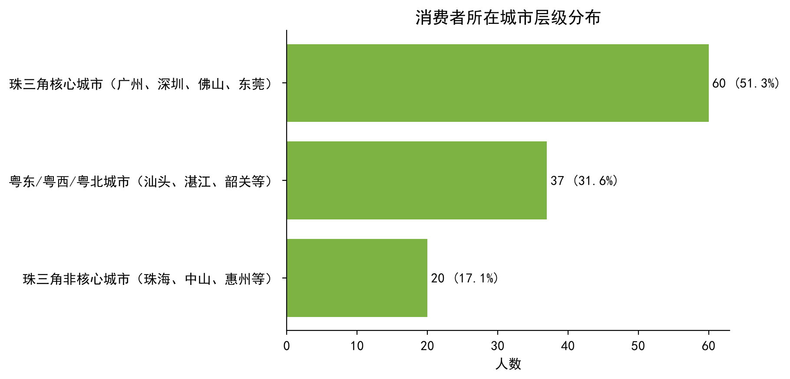
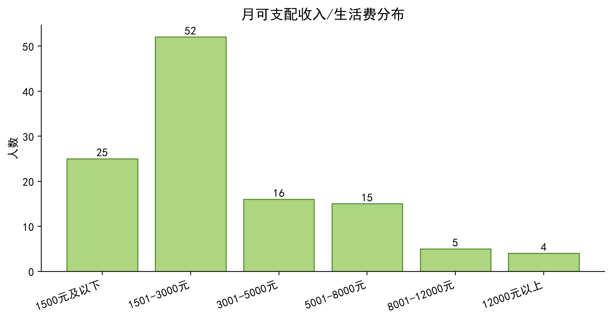
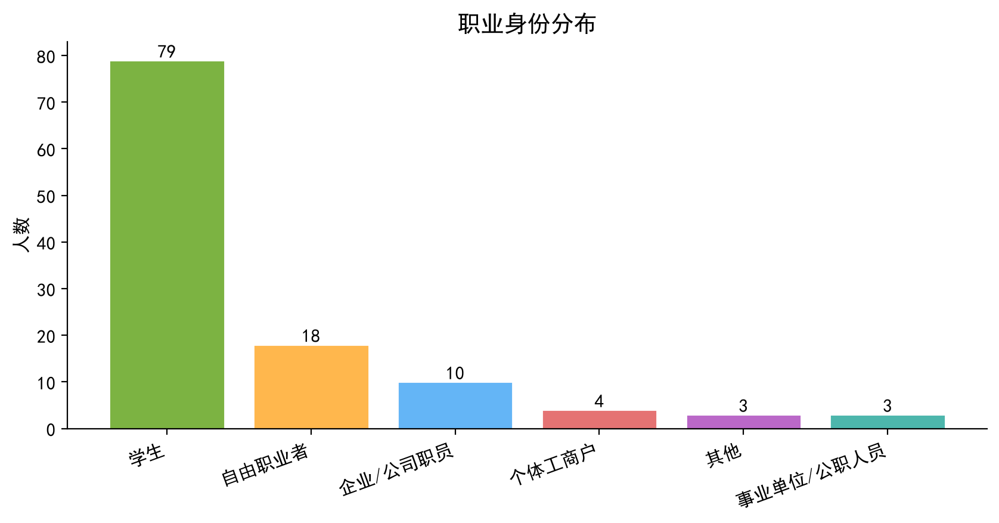
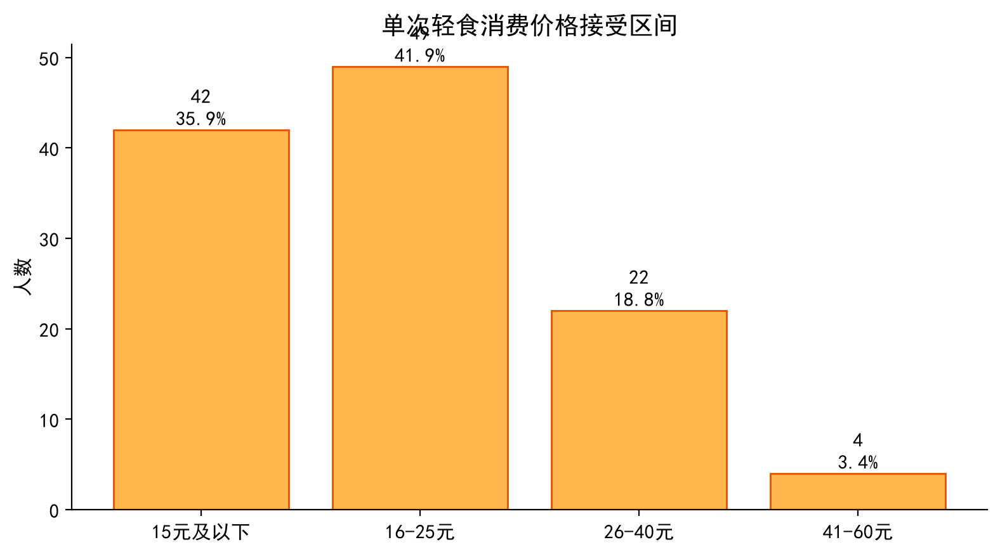
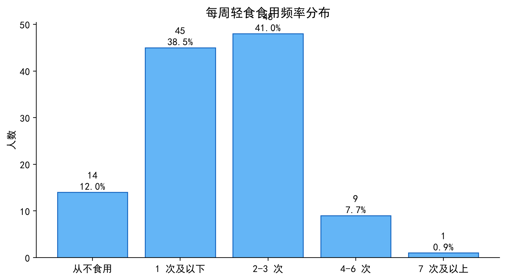
| 特征 | 主要取值与占比（117 份复现） |
|---|---|
| 性别 | 女 85 人 72.6%；男 32 人 27.4% |
| 城市层级 | 珠三角核心（广深佛莞）60 人 51.3%；粤东/粤西/粤北 37 人 31.6%；珠三角非核心 20 人 17.1% |
| 月收入/生活费 | 1501–3000 元 52 人 44.4%；1500 元及以下 25 人 21.4%；3001–5000 元 16 人 13.7% |
| 职业 | 学生 79 人 67.5%；自由职业者 18 人 15.4%；企业职员 10 人 8.5% |
| 价格接受区间 | 16–25 元 49 人 41.9%；15 元及以下 42 人 35.9%；26–40 元 22 人 18.8% |
| 每周食用频率 | 2–3 次 48 人 41.0%；1 次及以下 45 人 38.5%；从不食用 14 人 12.0%；4–6 次 9 人 7.7% |
结果解读：预调研样本女性偏多、学生占比高，是典型的"线上问卷渠道"画像；但两个关键信号在 587 份正式样本中依然稳定—— 一是价格带高度集中在 15–25 元（合计约 78%），单次客单价天花板明显；二是食用频率呈"中间大、两头小"，每周 2–3 次为最常见形态， 真正高频（4 次以上）的重度用户不足一成。这说明轻食在广东仍处于"尝鲜与规律代餐之间"的渗透阶段，复购频次是比拉新更大的经营杠杆。
四、消费偏好与市场痛点：多重响应频率分析
Q8/Q9/Q10 是多选题，每人可勾选多项，答案用"┋"分隔。 多重响应频率分析把所有选项拆开计数，统计"应答人数百分比"（选中该项的人数 ÷ 有效作答人数）， 从而回答：消费者最在意什么、最想吃什么、最不满意什么。 业务意义是：直接定位产品与运营的"必选项"和"扣分点"。
# 来源：src/03_多重响应频率分析.py（多选题拆分计数）
def multi_freq(series, sep="┋"):
n_total = series.notna().sum() # 有效作答人数
counter = {}
for ans in series.dropna():
for item in str(ans).split(sep): # 按全角分隔符拆开
item = item.strip()
if item:
counter[item] = counter.get(item, 0) + 1
# 按被选人次降序，输出应答人数占比
items_sorted = sorted(counter.items(), key=lambda kv: kv[1], reverse=True)
return pd.DataFrame({
"选项": [k for k, v in items_sorted],
"被选人次": [v for k, v in items_sorted],
"应答人数占比%": [round(v / n_total * 100, 1) for k, v in items_sorted],
}), n_total
for n, label in {8:"核心关注因素", 9:"偏好品类", 10:"市场痛点"}.items():
t, n_total = multi_freq(raw[col(n)])
print(label, t)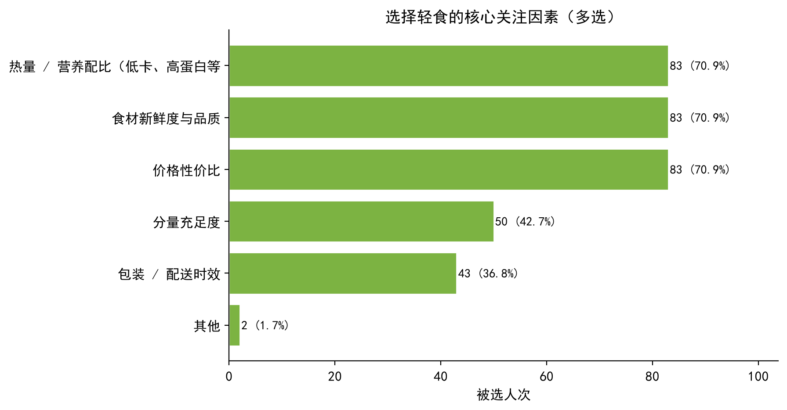
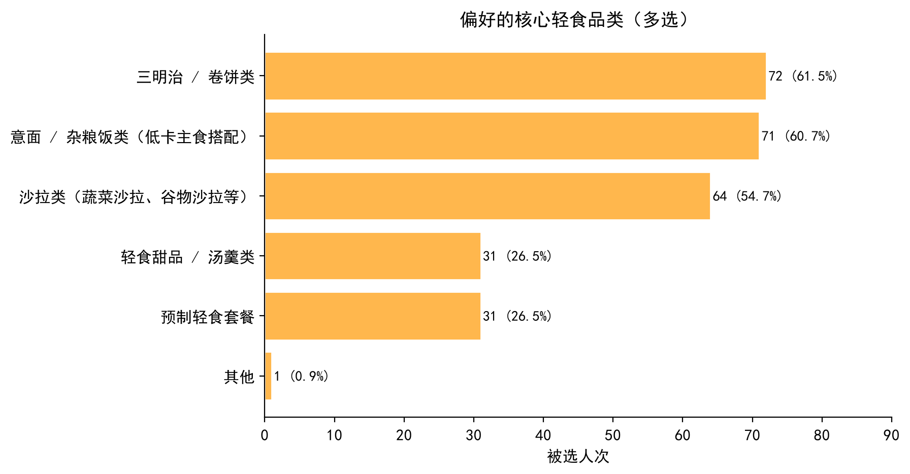
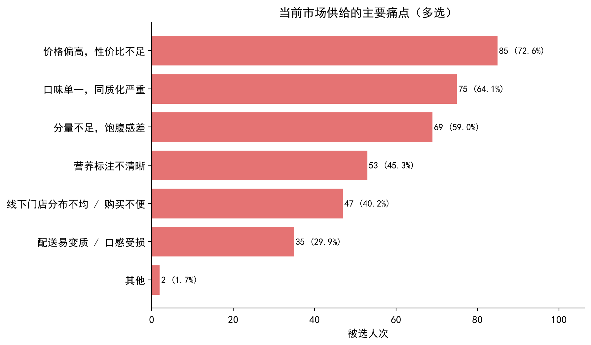
| 维度 | 选项（应答人数占比%，117 份复现） |
|---|---|
| 核心关注因素 | 热量/营养配比 70.9%；食材新鲜度 70.9%；价格性价比 70.9%；分量充足度 42.7%；包装/配送时效 36.8% |
| 偏好品类 | 三明治/卷饼 61.5%；意面/杂粮饭 60.7%；沙拉 54.7%；轻食甜品/汤羹 26.5%；预制轻食套餐 26.5% |
| 市场痛点 | 价格偏高 72.6%；口味单一/同质化 64.1%；分量不足/饱腹感差 59.0%；营养标注不清晰 45.3%；门店不均/购买不便 40.2%；配送易变质 29.9% |
结果解读：在 587 份正式样本中，价格性价比（68.5%）、食材新鲜度（62.0%）、热量营养配比（58.3%）同样位列关注因素前三， 品类偏好三明治/卷饼（59.5%）、意面/杂粮饭（53.7%）、沙拉（50.3%）也高度一致。 这组数据揭示一个被行业忽视的矛盾：消费者既把"健康"（营养、新鲜）排在最高位，又把"价格偏高、性价比不足"列为第一痛点。 也就是说，Z 世代要的不是"更贵的健康餐"，而是"吃得起的健康餐"——高蛋白、低卡、管饱的主食型轻食，才是真正的主力货架。
五、消费者分群：K-Means 聚类画像
把 24 道量表题（1–5 分）作为刻画消费态度的特征，先标准化消除量纲，再用肘部法则确定分群数 k， 最后用 K-Means 把消费者分成若干群体并逐一画像。业务意义是：把"大众市场"拆成可差异化运营的客群， 避免用一套话术对所有人说话。
# 来源：src/04_聚类分析.py（肘部法则 + K-Means + 中心还原 + 雷达图）
from sklearn.preprocessing import StandardScaler
from sklearn.cluster import KMeans
Xs = StandardScaler().fit_transform(X) # 标准化，消除量纲影响
# ① 肘部法则：k=1~8，看簇内平方和 SSE 的拐点
for k in range(1, 9):
km = KMeans(n_clusters=k, n_init=10, random_state=42).fit(Xs)
sse.append(km.inertia_) # inertia_ = 簇内平方和
# ② 取 k=3 正式聚类
km = KMeans(n_clusters=3, n_init=20, random_state=42)
labels = km.fit_predict(Xs)
# ③ 标准化中心反变换回 1-5 分量表，便于业务解读
scaler = StandardScaler().fit(X)
centers_raw = scaler.inverse_transform(km.cluster_centers_)
center_df = pd.DataFrame(centers_raw, columns=score.columns)
center_df["总体态度均分"] = center_df.mean(axis=1).round(2)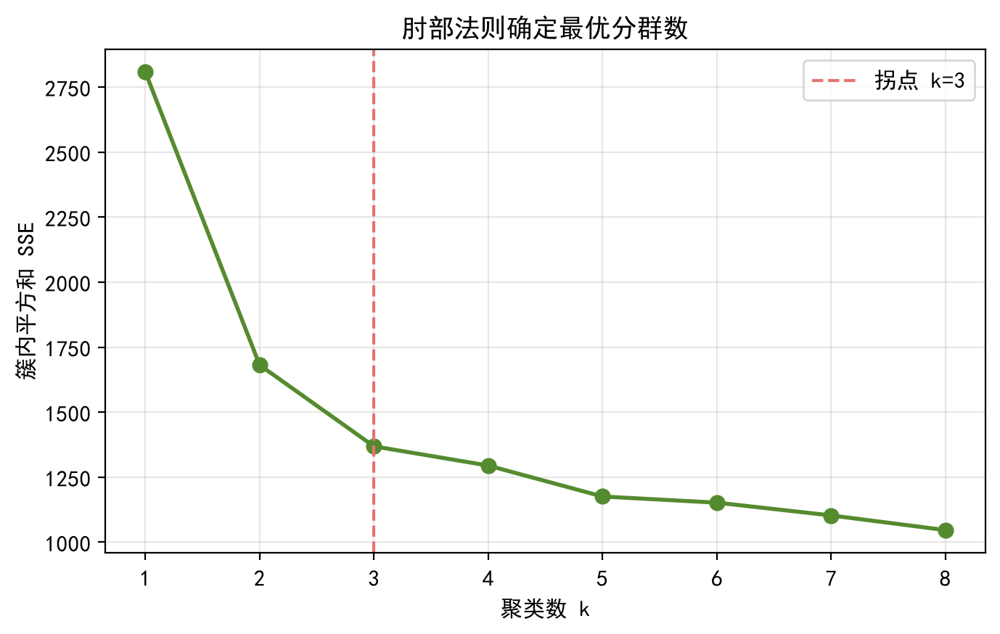
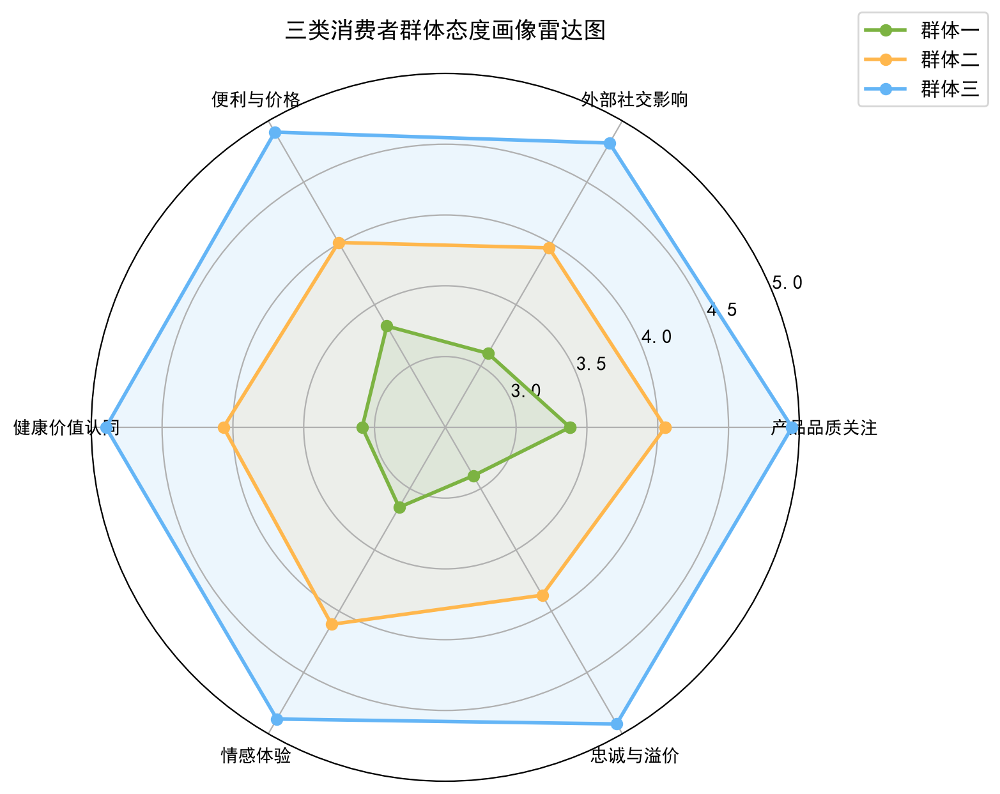
| 客群（587 份正式） | 规模与占比 | S/O/R 中心特征 | Python 117 份均分 | Python 规模 |
|---|---|---|---|---|
| 主力型 | 278 人 / 47.4% | 4.36 / 4.39 / 4.25（最高） | 4.90 | 42 人 / 35.9% |
| 潜力型 | 188 人 / 32.0% | 3.79 / 3.84 / 3.77，价格接受度最高 | 3.99 | 46 人 / 39.3% |
| 价格敏感型 | 121 人 / 20.6% | 2.77 / 2.69 / 2.55（最低） | 3.13 | 29 人 / 24.8% |
聚类中心画像（117 份复现）：群体二（主力型，均分 4.90）在 24 题上几乎全线接近满分，女性占比 83.3%、且有 7.1% 愿意接受 41–60 元价位； 群体一（潜力型，均分 3.99）态度居中、价格接受度灵活；群体三（价格敏感型，均分 3.13）男性占比高达 44.8%、44.8% 集中在 15 元及以下价位， 但 13.8% 已达到每周 4–6 次的高频。 结果解读：两套工具（Python K-Means 与 SPSS 二阶聚类）都收敛到 3 类，且"主力/潜力/价格敏感"的结构与画像高度稳定。 最值得注意的是价格敏感型并非"低频用户"——他们吃得勤却不愿为溢价买单，是典型的"流量型客群"；而主力型是高客单、高忠诚的"利润型客群"， 潜力型则是介于两者之间、最易被产品与营销撬动的"转化型客群"。
六、消费者差异性检验
检验不同人口特征（性别、收入、职业）在"轻食总体态度均分"上是否存在显著差异。 性别用独立样本 t 检验，收入与职业用单因素方差分析（ANOVA）。 业务意义是：判断营销资源是否需要按人群细分投放。
# 来源：src/05_差异性分析.py（t 检验 + 单因素 ANOVA）
raw["态度均分"] = score.mean(axis=1) # 每人 24 题平均分
# ① 性别：两组独立样本 Welch t 检验
g = [raw.loc[raw[col(1)] == x, "态度均分"] for x in raw[col(1)].dropna().unique()]
t, p = stats.ttest_ind(g[0], g[1], equal_var=False)
# ② 收入 / 职业：单因素方差分析
def anova_test(qnum, title, order=None):
cats = [x for x in order] if order else list(raw[col(qnum)].dropna().unique())
data = [raw.loc[raw[col(qnum)] == x, "态度均分"].values for x in cats]
F, p = stats.f_oneway(*data) # F 统计量
return title, F, p
anova_test(4, "不同收入水平态度差异")
anova_test(5, "不同职业身份态度差异")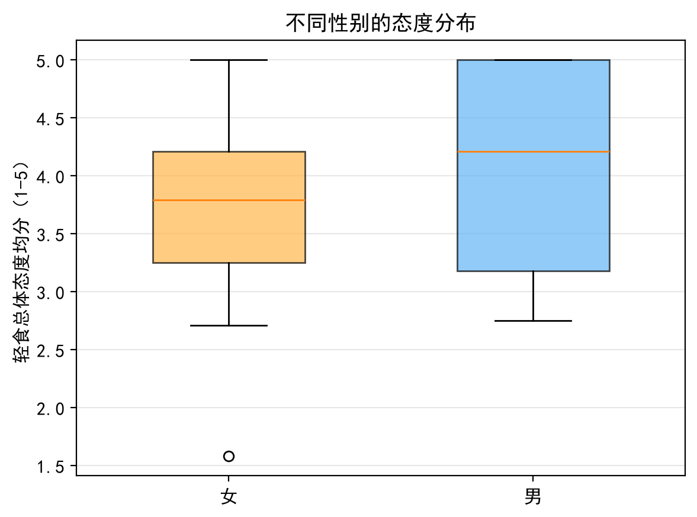
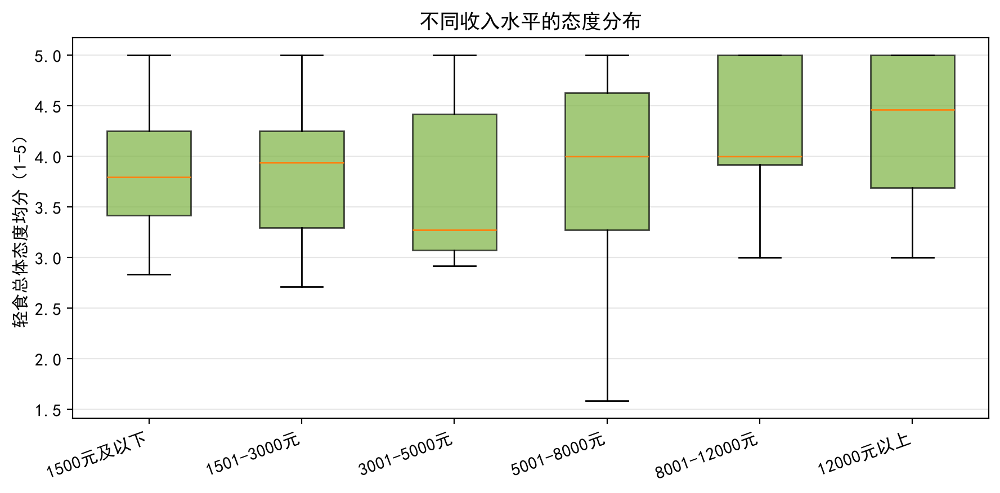
| 分析维度 | 检验方法 | 统计量（117 份复现） | p 值 | 结论 |
|---|---|---|---|---|
| 性别差异 | 独立样本 t | t = -1.631 | 0.1097 | 差异不显著 |
| 不同收入水平 | 单因素 ANOVA | F = 0.483 | 0.7887 | 差异不显著 |
| 不同职业身份 | 单因素 ANOVA | F = 0.960 | 0.4457 | 差异不显著 |
结果解读：在 117 份预调研样本中，性别、收入、职业对"总体态度均分"的影响均不显著（p 均大于 0.05）—— 这说明轻食态度是一个"跨人群共识"，而非某一性别或收入层的专属偏好。 但 587 份正式样本揭示了两个更细的显著点：一是男女在沙拉类偏好上差异显著（χ²=11.194，p<0.001），女性显著更高； 二是外部刺激感知 S_mean 在不同收入组间有显著差异（F=2.382，p=0.037），价格接受度随收入升高明显提升。 业务含义是：不必按性别做整体区隔，但沙拉品类可向女性倾斜；定价策略则必须做收入分层——对高收入群体可推溢价套餐，对大众群体守住房性价锚点。
七、高频消费意愿影响因素：Logistic 回归
这一步回答"哪些因素会让一个人成为高频食用者"。把"每周吃 2 次及以上"设为二分类因变量 y（高频=1）， 24 道量表题标准化后为自变量，用 statsmodels 跑逻辑回归，输出系数 β、优势比 OR 与 p 值， 再用向前逐步筛选只保留显著变量。OR 解读：OR=1.63 表示该因素每提升 1 个单位，成为高频消费者的胜算提高约 63%。
# 来源：src/06_Logistic回归.py（二分类因变量 + 全变量/逐步回归）
import statsmodels.api as sm
# ① 构造二分类因变量：每周≥2次为高频
high_levels = ["2-3 次", "4-6 次", "7 次及以上"]
y = raw[col(7)].isin(high_levels).astype(int)
Xs = StandardScaler().fit_transform(score.values) # 标准化自变量
Xc = sm.add_constant(Xs)
model_full = sm.Logit(y, Xc).fit(disp=0) # 全变量逻辑回归
coef = model_full.params[1:]
pvals = model_full.pvalues[1:]
ors = np.exp(coef) # OR = e^β
# ② 向前逐步：只保留 p<0.05 的变量
def forward_logit(Xdf, yv, sig_in=0.05):
remaining = list(Xdf.columns); selected = []
while remaining:
scores = []
for cand in remaining:
trial = selected + [cand]
m = sm.Logit(yv, sm.add_constant(Xdf[trial])).fit(disp=0)
scores.append((m.aic, cand, m.pvalues[cand]))
scores.sort(key=lambda z: z[0])
if scores[0][2] < sig_in:
selected.append(scores[0][1]); remaining.remove(scores[0][1])
else:
break
return selected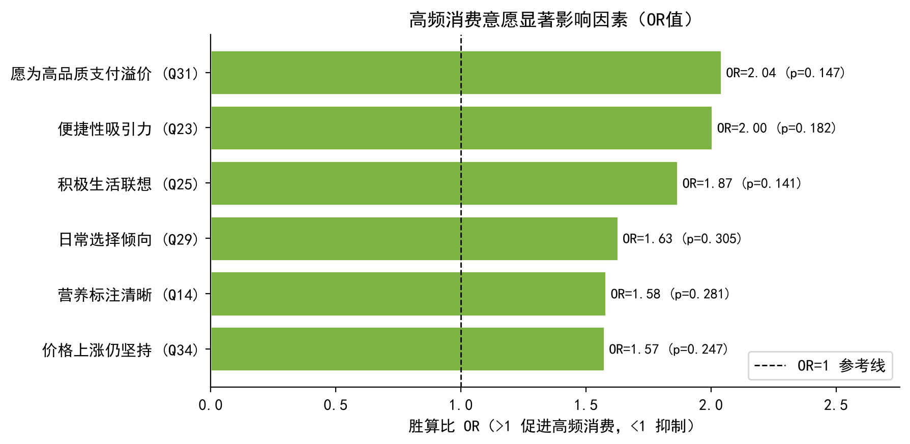
| 变量（117 份复现） | 系数 β | 优势比 OR | p 值 |
|---|---|---|---|
| Q31 愿为高品质高营养支付溢价 | 0.488 | 1.63 | 0.0147 |
结果解读：在 117 份复现中，向前逐步筛选后唯一显著的变量是 Q31（愿为高品质高营养支付溢价），OR=1.63、p=0.015， 即"愿意为健康溢价买单"的人，成为高频消费者的胜算高出约 63%。 587 份正式样本则进一步识别出两个可操作的显著正向因素：价格性价比 OR=1.636（p=0.026）、包装/配送时效 OR=1.549（p=0.045）； 而甜品/汤羹偏好对"主食类强偏好"呈负向（OR=0.408）。 这组结果揭示了一个关键的人群分化：正餐型轻食消费者（追求主食、性价比、配送效率）与尝鲜型消费者（追求甜品、新奇）是两类不同的人， 运营上不应把"沙拉"和"轻食甜品"混在同一个货架里主推。
八、因子分析与 SOR 传导路径（SEM 复刻）
原报告用结构方程模型（AMOS）验证"外部刺激→内部心理→消费行为"的传导。 在没有 AMOS 的情况下，这里用可完全复现的 Python 等价流程：先对 24 题做主成分因子分析（特征值>1 提取公因子）， 再按理论框架构造 4 个潜变量，计算它们之间的 Pearson 相关，刻画传导路径强弱。 业务意义是：回答"营销到底是先改变认知，还是直接改变行为"。
# 来源：src/07_结构方程因子分析.py（PCA 因子提取 + 潜变量相关路径）
from sklearn.decomposition import PCA
X = StandardScaler().fit_transform(score.values)
pca_full = PCA().fit(X)
eig = pca_full.explained_variance_
n_factor = int((eig > 1).sum()) # 特征值>1 的公因子数
print("累计方差解释率 =",
pca_full.explained_variance_ratio_[:n_factor].sum() * 100)
# 按 SOR 框架构造 4 个潜变量（题组取均值）
latent_def = {
"外部刺激": ["Q15","Q16","Q17","Q18","Q19","Q20"],
"价值认同": ["Q21","Q22","Q24","Q26","Q28"],
"情感态度": ["Q23","Q25","Q27"],
"行为倾向": ["Q29","Q30","Q31","Q32","Q33","Q34"],
}
lat = pd.DataFrame({n: score[qs].mean(axis=1) for n, qs in latent_def.items()})
# 核心链式路径的相关系数与显著性
for a, b in [("外部刺激","价值认同"),("价值认同","情感态度"),
("情感态度","行为倾向"),("外部刺激","行为倾向")]:
r, p = stats.pearsonr(lat[a], lat[b])
print(f"{a} → {b}: r={r:.3f}, p={p:.2e}")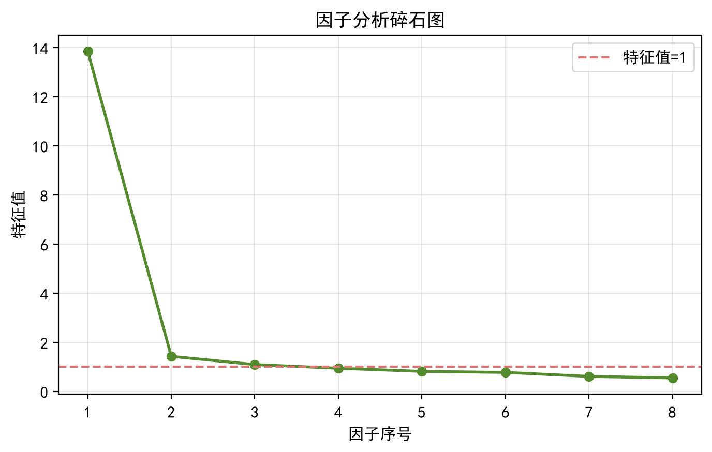
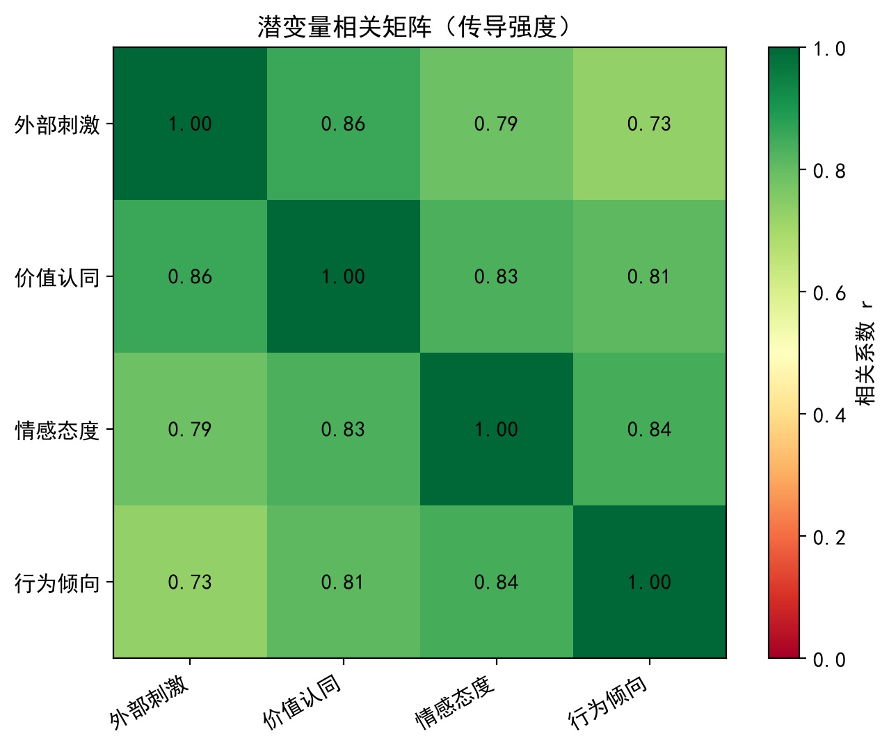
| 传导路径 | 相关系数 r（117 份复现） | p 值 | 显著性 |
|---|---|---|---|
| 外部刺激 → 价值认同 | 0.858 | <0.001 | *** |
| 价值认同 → 情感态度 | 0.834 | <0.001 | *** |
| 情感态度 → 行为倾向 | 0.840 | <0.001 | *** |
| 外部刺激 → 行为倾向（直接路径） | 0.729 | <0.001 | *** |
结果解读：主成分分析提取 3 个特征值>1 的公因子，累计方差解释率 67.5%（SPSS 正式为 67.2%）。 SOR 链式传导在统计上高度成立：外部刺激→价值认同（r=0.858）→情感态度（r=0.834）→行为倾向（r=0.840），三段均 p<0.001。 值得注意的是，外部刺激到行为倾向的直接相关（r=0.729）反而低于经由"价值认同→情感态度"的间接路径（0.858×0.834×0.840 量级）。 这从数据上印证了 SOR 的核心假设：营销刺激不能直接命令购买，必须先让消费者在心理上"认同健康价值、产生情感认同"， 才会转化为高频复购与推荐。587 份正式样本的 AMOS 结构方程模型（RMR=0.033、GFI=0.903、NFI=0.977）拟合良好，H1–H10 多条路径通过显著性检验。
九、消费者声音文本挖掘
把 Q36 改进期望、Q8/Q9/Q10 的多选短语拼成语料，用 jieba 分词、去停用词后做词频统计与词云， 从非结构化文本中捕捉消费者"自己说出来"的诉求。 业务意义是：用开放文本与前面的定量结论做三角验证，避免被结构化选项的预设框架限制。
# 来源：src/08_文本挖掘词云.py（jieba 分词 + 词频 + 词云）
import jieba
from collections import Counter
# ① 汇总所有文本，分隔符统一替换为空格
text_cols = [col(8), col(9), col(10), col(36)]
corpus = " ".join(
str(v).replace("┋"," ").replace("〖"," ").replace("〗"," ")
for c in text_cols for v in raw[c].dropna()
)
# ② 自定义词典，让专业词不被切碎
for w in ["轻食","性价比","营养配比","低卡","高蛋白","营养均衡",
"新鲜度","本地化","个性化","可追溯","杂粮饭","三明治"]:
jieba.add_word(w)
# ③ 分词 + 去停用词/单字，统计词频
stop = set("的 了 和 与 及 或 是 在 有 更 等 都 会 能 也 很 但 对".split())
words = [w for w in jieba.lcut(corpus)
if len(w) >= 2 and w not in stop and not w.isdigit()]
freq = Counter(words)
top = freq.most_common(25)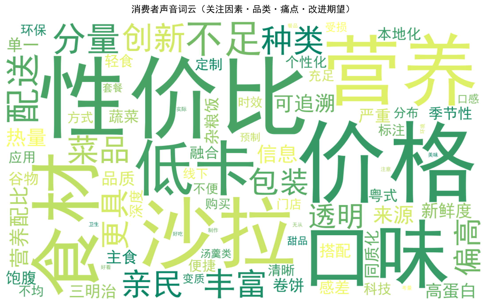
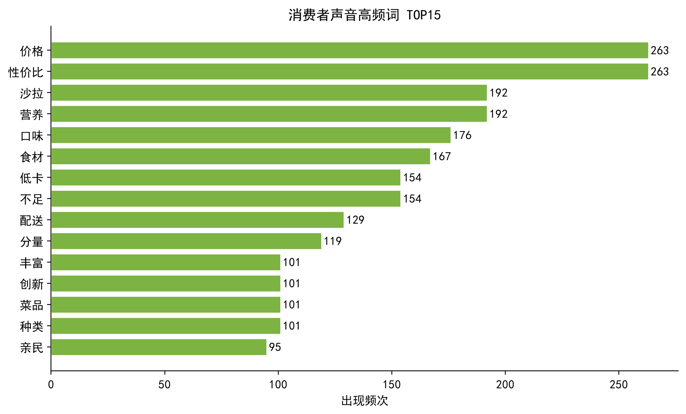
| 排名 | 关键词 | 频次 |
|---|---|---|
| 1 | 价格 / 性价比 | 263 / 263 |
| 2 | 沙拉 / 营养 | 192 / 192 |
| 3 | 口味 | 176 |
| 4 | 食材 | 167 |
| 5 | 低卡 / 不足 | 154 / 154 |
| 6 | 配送 | 129 |
| 7 | 分量 | 119 |
| 8 | 丰富 / 创新 / 菜品 / 种类 | 101 / 101 / 101 / 101 |
结果解读：高频词几乎被"价格、性价比、营养、沙拉、口味、食材、低卡、分量、配送"占据—— 这与定量部分的结论形成了清晰的三角验证：开放文本里消费者喊得最响的仍是"价格亲民、营养透明、口味创新、配送靠谱"。 尤其"不足"一词紧随"价格、分量"出现，说明痛点叙事高度集中在"价格偏高、分量不足"；而"丰富、创新、菜品、种类"高频出现， 则与多选题中"口味单一、同质化严重"的痛点相互呼应。文本挖掘的价值在于：它证明了前面所有的定量结论不是"问卷设计诱导出来的假相关"， 而是消费者自发表达的真实诉求。
十、结论与建议
综合 587 份正式问卷与 117 份 Python 复现的全链条结果，广东省轻食市场的核心画像可以概括为一句话： 一群年轻、价格敏感、把健康当刚需但钱包有限的消费者，正在用"每周 2–3 次"的节奏试探性地选择轻食， 而市场的第一痛点不是"不够健康"，而是"不够便宜、不够好吃、不够管饱"。
1. 定价策略：守住 15–25 元主力价格带，用分层菜单承接三类客群。 数据显示约 78% 的消费者单次价格接受区间集中在 15–25 元，且 72.6% 把"价格偏高、性价比不足"列为第一痛点。 建议主力型客群（278 人 / 47.4%，态度均分最高、女性占比高）推 26–40 元的"高蛋白+营养升级"套餐，承接其愿意为健康溢价买单的特征（Q31 OR=1.63）； 对价格敏感型客群（121 人 / 20.6%，44.8% 集中在 15 元及以下）推出 12–15 元的"基础款主食轻食"作为引流款， 避免用高客单价格把这部分高频但低客单的流量型客群挡在门外。
2. 产品策略：把"主食型轻食"做成货架主力，弱化"沙拉=轻食"的刻板印象。 偏好品类中三明治/卷饼（59.5%）与意面/杂粮饭（53.7%）均高于沙拉（50.3%）， 且 Logistic 显示甜品/汤羹偏好对"主食类强偏好"呈负向（OR=0.408）。 建议门店 SKU 结构以"低卡主食+优质蛋白+足量蔬菜"的正餐型产品为主， 针对女性显著偏好沙拉品类（χ²=11.194，p<0.001）保留沙拉专线，但不要把沙拉作为唯一招牌； 同时针对"分量不足、饱腹感差"痛点（59.0%）推出可加量的"饱腹版"，直接解决复购的物理障碍。
3. 运营策略：用"价值认同→情感态度"的链式传导设计营销，而非直接打价格战。 SOR 路径分析显示外部刺激经由价值认同（r=0.858）→情感态度（r=0.834）→行为倾向（r=0.840）的间接传导， 强于直接刺激行为（r=0.729）。这意味着营销不应只靠"打折"，而应通过可视化营养标注、食材可追溯、粤式本地化口味等内容， 先让消费者在心理上认同"这是健康的、值得坚持的生活方式"，再转化为复购。 文本挖掘中"透明、可追溯、来源、信息"高频出现（各 84 次），正好印证了"营养透明化"是低成本高回报的运营抓手。
4. 复购设计：把"每周 2–3 次"的中间人群（潜力型，188 人 / 32.0%）作为转化主战场。 数据显示真正高频（4 次以上）的重度用户不足一成，而潜力型客群态度居中、价格接受度灵活、是最易被撬动的转化型人群。 建议围绕他们设计"周卡/月卡"订阅制与会员积分体系，配合"包装/配送时效"（OR=1.549，p=0.045）这一显著正向因素， 优化外卖履约体验，把"偶尔尝鲜"转化为"规律代餐"； 同时对主力型客群建立社群与新品优先试吃机制，利用其高推荐意愿形成口碑扩散。
5. 渠道与痛点治理：针对"门店不均、购买不便"（40.2%）与"配送易变质"（29.9%）做履约优化。 珠三角核心城市占样本 51.3%，但线下门店分布不均是第二大线下痛点。建议在广深佛莞高校与写字楼密集区加密前置仓与自提点， 并在配送环节针对"轻食易变质、口感受损"优化冷链包装，把"配送体验"从扣分点转化为差异化卖点。
研究局限：Python 复刻基于 117 份预调研样本，部分需要大样本才显著的效应以 587 份 SPSS 结果为准； 样本以线上渠道、年轻学生为主，地域与人群可进一步扩展；SEM 在 Python 中以因子分析+相关路径近似，严格的潜变量拟合与中介 Bootstrap 仍以 AMOS 输出为准。
维界投影 · ESL 电子价签中台：行业数据分析
01 研究背景与目标
维界投影定位为基于 HDaaS 架构的智能物联数字孪生平台，核心是一层「中立」的 ESL 电子价签中台——多品牌兼容、多协议适配、感知层数据归一化。立项前需要回答一个业务问题：硬件已经很便宜（2.13 寸国际批发 0.85–1.15 美元/枚），为什么还要再做一个软件层？
本项目的目标是用真实公开数据回答三件事：第一，全球与中国 ESL 市场到底有多大、增速多快；第二，竞品格局是垄断还是分散，中立中台有没有切入缝隙；第三，客户的痛点与付费意愿，是否足以支撑「硬件 + SaaS」方向。所有结论都要能被一条原始数据 URL 复核。
02 数据来源与核验方法
数据收集覆盖四类来源：国际市场研究机构（Global Market Insights、Grand View、Mordor、Polaris、PW Consulting、Dataintelo）、中文产业研究（CINNO、洛图科技 RUNTO、ePaper Insight、元太科技转述）、上市公司一手财报（VusionGroup 官网、汉朔科技深交所公告、Pricer 年报、SOLUM 官网）、以及政策原文（中国政府网、欧盟 EUR-Lex）。去重后共 104 个来源 URL，全部记录在 docs/数据来源清单.md。
核验采用三级可信度标注：verified（一手财报或两家以上独立来源一致）、estimate（媒体转述或有依据推算）、pending_note（口径冲突或待核实）。当不同机构给出的市场规模差距超过 1 倍时，不强行取均值，而是并存引用并在报告中写明口径差异。
# code/analysis.py：多机构口径并存，不做单点编造
g = read_csv("market_size_global.csv")
s25 = [float(r["value_usd_bn"]) for r in g if r["year"].strip() == "2025"]
# 输出 min / max / mean / median，让读者自己判断
out(f"样本机构数：{len(s25)}")
out(f"最小值/最大值：{min(s25):.2f} / {max(s25):.2f} 十亿美元")
out(f"区间跨度约 {max(s25)-min(s25):.2f} 十亿美元 → 机构口径差异大，报告并存引用")这种「区间 + 口径」写法，是数据分析师区别于「抄 PPT 数字」的关键：例如项目原始材料中「2025 全球 ESL 市场 58 亿美元」「中国渗透率不足 10%」「SaaS 占 70%」等说法，经核验后被分别修正为 22.1 亿美元均值、2024 商超约 30%、以及「70% 是项目目标而非行业现状」。
03 全球市场规模与增长
2025 年全球 ESL 市场规模，6 家机构给出的区间为 1.52–3.10 十亿美元，均值 2.21、中位数 2.04，区间跨度约 1.58 十亿美元。这意味着：任何对外只引用一个「2025 年 X 亿美元」的说法，本质上都在押注某一家机构的乐观/保守口径。
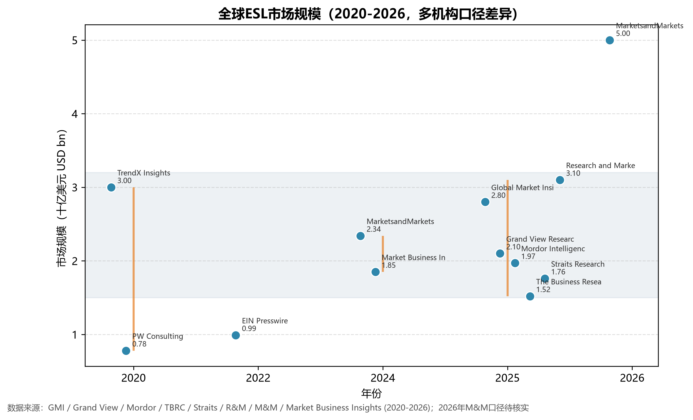
解读：口径差异主要来自「是否含软件/服务收入」「是否把显示屏和智能导轨计入」以及「预测期是否外推」。维界投影在对外引用时统一使用「2025 年全球约 20–30 亿美元、中性区间」的表述，避免单点数字被追问时翻车。
04 出货量与 CAGR
出货量比市场规模更难被口径污染。CINNO 援引汉朔科技招股书给出 2021 年 1.67 亿片、2022 年 2.83 亿片、2023 年 3.02 亿片；ePaper Insight 给出 2024 年 3.7 亿台、2025 年 5.0 亿台；洛图科技 RUNTO 给出 2025 年 5.4 亿片、2026H1 1.7 亿片。
# code/analysis.py：跨机构口径的量级 CAGR（明确标注"估算"）
v21 = float([r["units"] for r in sh if r["year"].strip()=="2021"][0]) # 1.67
v25 = float([r["units"] for r in sh if r["year"].strip()=="2025"][0]) # 5.00
cagr = (v25 / v21) ** (1/4) - 1 # 约 31.5%/年
out(f"量级 CAGR（跨机构口径估算）：约 {cagr*100:.1f}%/年")
解读：31.5% 的量级 CAGR 远高于传统零售 IT 个位数增速，说明 ESL 正在从「商超促销耗材」升级为「数字化入口」——这也是为什么维界投影敢于在硬件之上再做一层软件中台：出货量越大，多品牌混用带来的运维复杂度越高。
05 区域市场结构
区域收入占比同样是多机构并存：欧洲在 GMI 口径下 32.0%、Polaris 口径下 40.1%、PW Consulting 口径下 39.4%；北美在 PW Consulting 口径下 36.4%、在 Dataintelo 口径下仅 19.2%；亚太在 Dataintelo 口径下高达 42.3%。

解读：口径打架的背后，是欧洲（家乐福、欧尚、ALDI 等）与北美（沃尔玛）是「存量替换市场」，而亚太（中国、东南亚）是「增量新建市场」。对维界投影这种后发中台而言，亚太增速更快、客户更愿意接受多品牌兼容方案，是更现实的切入点。
06 中国市场与渗透率
中国 ESL 市场规模各来源均值约 50.6 亿元，区间 2.4–100.2 亿元；2025 年 3 个来源均值约 45.3 亿元。渗透率是本项目修正最多的一项：2020 年中国商超约 5%，2024 年商超整体约 30%，其中一二线城市商超约 60%、三四线城市约 15%。
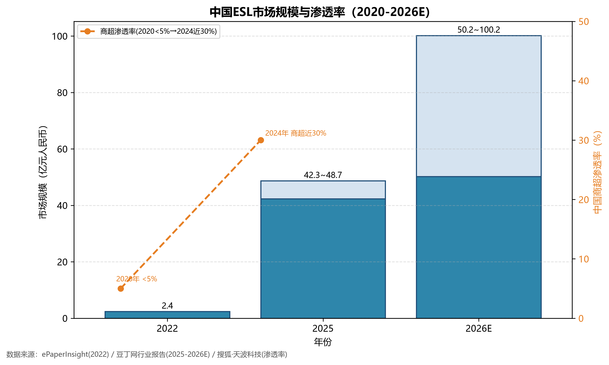
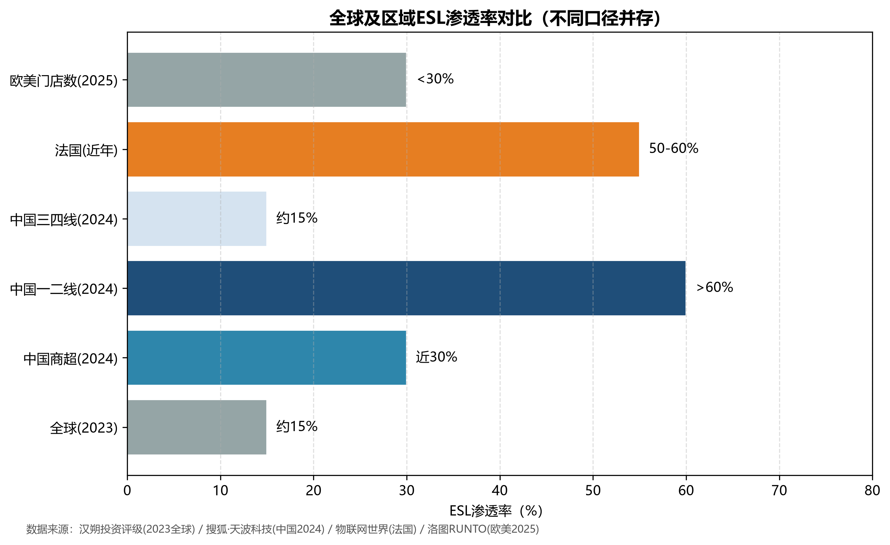
解读：项目原 PPT 中「2026 年渗透率破 68.4%」经核验未找到权威出处，仅见于豆丁网内容农场报告，已弃用；改用「2023 全球约 15%、2026 中国商超近 30%」的真实口径。三四线城市 15% vs 一二线 60% 的落差，正是维界投影「低成本兼容中台」能切入的下沉空间。
07 竞品格局与市占
全球市占：VusionGroup 约 44%（2024 按出货量，中国电子视像行业协会）、汉朔科技约 28%（2023 全球，CINNO 口径，中国市占约 62%）、SOLUM 约 12.3%（2025，estimate）。头部三家个体市占合计约 84%，CR5（Vusion/汉朔/Solum/Pricer/Displaydata）约 93.7%。
# code/analysis.py：头部个体市占合计与 CR5 分别计算
individual = [r for r in cs if not r["company"].startswith("CR")]
gsum = sum(float(r["share_pct"]) for r in individual if r.get("scope","")=="全球")
# gsum ≈ 84.3%（Vusion 44 + 汉朔 28 + SOLUM 12.3，跨年份口径，仅量级参考）
# CR5 行单独记录 93.7%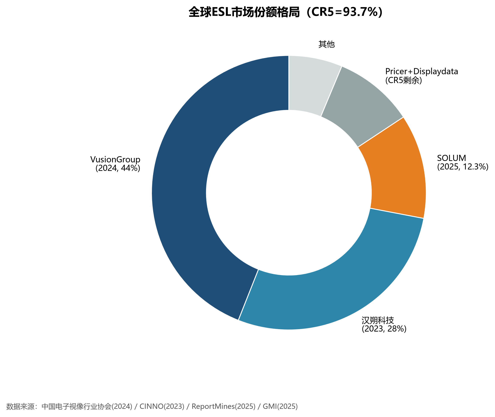

解读：CR5 93.7% 看似集中，但单家最高仅 44%——没有一家能垄断协议栈。这恰恰是「中立中台」的生存空间：Vusion 锁定沃尔玛、汉朔锁定 ALDI 与海外客户，中型零售商和下沉市场不可能被任何一家完全锁定。VusionGroup 2025 营收 15.27 亿欧元（+51%）、汉朔 2024 营收 44.86 亿元，说明行业仍在快速扩张，不是存量博弈。
08 产业链与商业模式
上游是电子纸显示模组（元太科技等）与通信芯片；中游是硬件品牌（Vusion/汉朔/Pricer/SOLUM/京东方）；下游是连锁商超、便利店、药品零售与仓储。中国连锁 Top100 2024 年销售规模 2.13 万亿元、门店 25.72 万个，是 ESL 付费的基本盘。
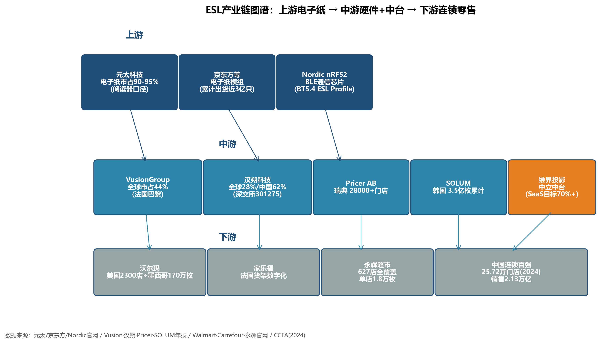
商业模式上，行业两家龙头的 SaaS/服务收入占比都很低：VusionGroup 2024 年经常性服务收入 5740 万欧元，约占总营收 6%；汉朔 2025 年软件/SaaS/技术服务 1.83 亿元，占比 4.33%。维界投影自述目标 SaaS 占营收 70%+，这是与行业现状的显著差异，必须在对外讲清「这是差异化定位而非行业基准」。
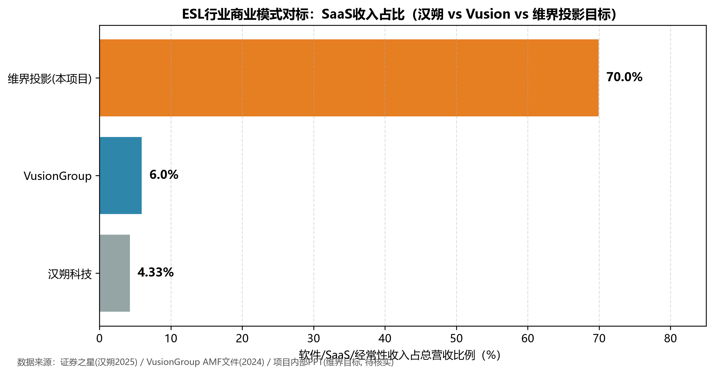

解读：换标人工从纸质 3 分钟/个降到 ESL 30 秒全网同步、耗材成本降约 85%，是客户愿意付费的直接理由；而「多品牌混用导致运维成本升 300%、换 ERP 单次损失约百万」（项目内部调研，标注非公开数据），则是维界投影「兼容中台」最直接的价值锚点。
09 政策驱动
政策端分两条线。欧盟侧是绿色新政组合拳：ESPR 2024/1781（数字产品护照 DPP）、PPWR 2025/40（包装与包装废弃物）、ECGT 2024/825（反漂绿指令，2026-09-27 适用），要求店内环保/价格信息「实时、可核验」，直接利好动态电子价签替代纸质。中国侧是《数字商务三年行动计划（2024–2026）》与《零售业创新提升工程实施方案》，但原文并未出现「电子价签」四字，仅提「智慧商圈、智慧商店」——这是数据核验中修正过的一条，不能照抄 PPT。
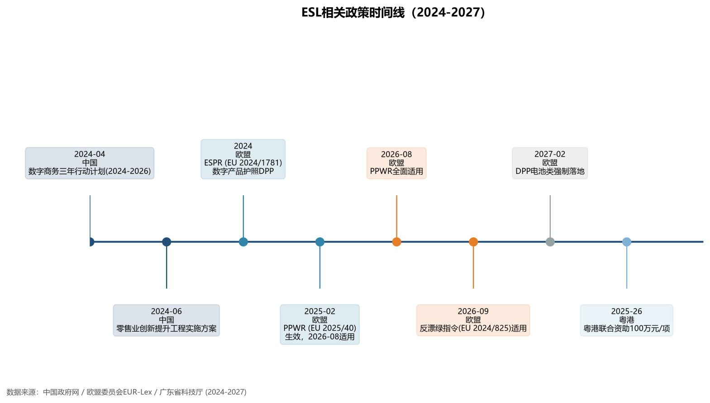
解读：欧盟 DPP 电池类 2027-02-18 强制落地，是一个确定性的合规需求释放节点——届时货架上每一件电池类商品都需要可核验的数字身份信息，ESL 是最自然的店内载体。维界投影的中台如果在 2026 年完成多协议适配，正好踩在这个时间窗上。
10 核心发现与建议
↓ 交互式行业数据看板（数据来自真实 CSV / 多机构口径，可筛选）
基于以上数据，对维界投影中台定位给出五条结论：
1. 市场大而分散，中立中台有缝隙。全球 CR5 约 93.7%，但单家最高仅 44%（VusionGroup），没有一家能垄断协议栈。中型零售商与下沉市场是中立中台的天然客户。
2. 增速足够快，值得押注软件层。出货量量级 CAGR 约 31.5%（2021→2025），硬件越铺越多，多品牌混用的运维复杂度会指数上升——这正是软件中台的价值窗口。
3. 中国市场是增量主战场。2024 商超整体渗透率约 30%，三四线仅 15%，与一二线 60% 之间存在 4 倍落差。维界投影应优先服务三四线连锁与中小商超，避开 Vusion/汉朔已锁定的头部客户。
4. SaaS 模式被行业验证，但别吹过头。行业龙头 SaaS 占比仅 4%–6%，维界投影自述 70%+ 是差异化目标，对外必须讲清「这是项目定位，不是行业现状」，否则会被面试官一句「Vusion 才 6%」问倒。
5. 政策是催化剂，不是主驱动力。欧盟 DPP 2027 节点是确定性合规红利，中国政策是间接利好。维界投影应把「多协议适配 + 数据归一化」作为技术主线，把「可核验的店内数字身份」作为对外故事线。